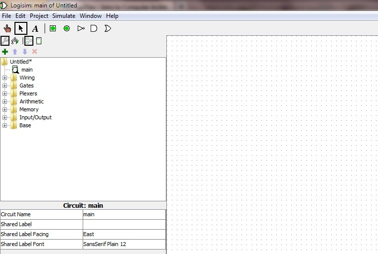
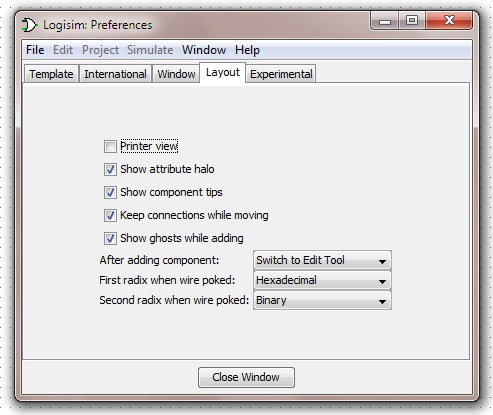
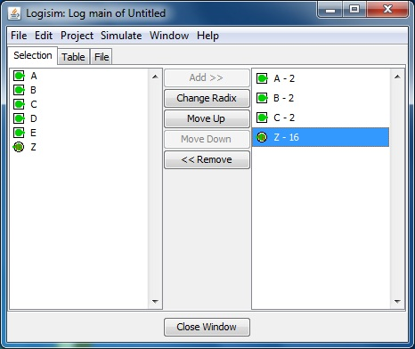
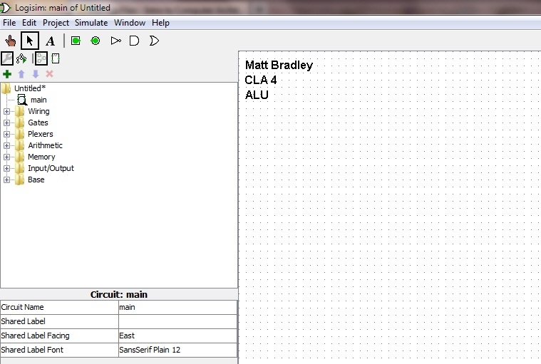

Overview
You will find that building a circuit in simulation is much, much easier, primarily because the simulator does many things for you. No more chips, no more wires, no more tiny holes and tangled messes.
Logisim is an open-source program designed by a student (who is now a teacher) for students studying computer logic. The download site for Logisim is available here. We will be using Logisim 2.7.1. Make sure this is the version you are downloading. It was written in Java and is thus available in a platform-independent executable JAR file. If you are running Windows, our advice is to download and use the Windows-specific version. There is no installation procedure, as the executable file is entirely self-contained. Simply place it wherever you like to keep your program files and create shortcuts to it wherever you like to keep your shortcuts to program files. Once you have done this, run the program and Logisim will load and execute.
- Layout: You will want to begin by familiarizing yourself with five main regions of the interface. At the top are your usual menus. Under that, a toolbar with selectable tools. Under that, three panes which define your workspace.

Fig. 1
- The large pane on the right is your breadboard. Circuits can be placed on this board and their input and output pins will align to the grid of dots. Wires can be drawn between those pins along the grid as well.
- Objects that can be placed onto the large pane are contained in the upper left pane, which is organized into folders called Libraries. A few objects are also available as tools on the toolbar, but understand that the toolbar buttons are simply shortcuts to items available in the Libraries. Expand the Base Library and you will see this to be true.
- The last pane, in the lower left, remains blank until you select an object in a library. When you click on an object, this pane will show that object's attributes, some of which can be changed. For instance, an output pin's label or an AND gate's bit width can both be adjusted here.
- Configuration: After experimenting with the various tools in the Base and Gates Libraries, click on the File menu and select Preferencesto open the Preferences Dialog. You will definitely want to experiment with these options also until the simulator is configured in a comfortable fashion. As of now, we are not mandating any configurations except one:

Fig. 2
- On the Layout tab, set the First radix when wire poked to Hexadecimal and set the Second radix when wire poked to Binary. This will be a major aid in debugging your circuits!
After that, you may want to venture over to the Toolbar and Mouse tabs to see what options you are given there. These settings are up to you. It will not effect any lab if these are changed. They are strictly your preferences.
- Logging: Logisim's logging function is available from the Simulate menu. The logging window offers three tabs, named "Selection", "Table", and "File". Selection lets you pick the inputs and outputs whose states you wish to see recorded. Generally, fewer is better. You should always try to prove the correct function of your circuit with the fewest number of fields, to cut down on unnecessary clutter in your log files. Additionally, you are allowed to select a radix for each object being logged. We almost always use hexadecimal.

Fig. 3
The Table tab shows the log in progress. It creates a column for each object being recorded, and adds a new row to the log every time the state of the circuit changes (either on a clock tick or when you manually poke an input). Most of the time, only certain states (configurations of inputs) are necessary to prove that the circuit works, so we will only record a few of these rows in the log file itself. Read on.
Look at the File tab. Here you can create a new log file or select a file that has already been created. Always make sure the "Include Header Line" box is checked. It will do no good if you have a log file without any labels. Finally, take note of the ENABLE/DISABLE button on this tab. With the Logging window open, any change you make to the circuit's inputs with the poke tool will generate a new row on the Table tab. However, this row will only be amended to the log file if File Output is Enabled. When you click the button to enable file-out, it immediately prints the last line on the Table. So if you only want to log a few specific cases, rather than everything in between, you may do so. Simply begin logging with file output disabled. Set up the first state you want to log. Then quickly Enable and Disable file output. Change to the second state you want to log, and repeat. It will print those lines and nothing else.
This will be a very important technique later on, when your lab instructor won't have time to sort through a million different inputs in a complicated circuit and will thus ask for the logged results of specific scenarios. Set up that scenario, give the file-out a quick on/off, and then move on to the next requested scenario.
FOR ALL SIMULATIONS
- Name your circuit appropriately. Try to follow MS-DOS naming conventions when naming parts, meaning no spaces, periods, or other funky symbols. Just letters and numbers, with underscores as necessary. For example, in Closed Lab 1, you will be building the (n × 3) + x circuit in simulation. So, you might name the circuit "times_plus", for example. To re-name a circuit, look in the upper left portion of the screen where the circuits are listed, left click on the circuit you want to re-name, once selected look at the lower left of Logisim you should see the info for the circuit you have selected and change the circuit name to its new name.
- Once your settings have been configured and your main circuit has been named, we recommend that you save your work, since those configurations are saved as part of the circuit file.
- Once your main circuit is prepped and ready, you can use the tools in the Base and Gates libraries to build your circuit just as you did before, only this time with individual gates rather than big, bulky chips. Place the needed input and output pins (on your toolbar, these will be the square and circle respectively, each containing a green dot). Then add gates and wires to connect them.
- Note that all parts in these early circuits have a bit-width of ONE bit. Wider wire-bundles will be used later. Feel free, though, to experiment with multiple-input logic gates, labels, and pretty much everything else.
- In the Input/Output library you will find LED lights which can be wired into your circuit. Every circuit, for the most part, should start and end with the green pins (the square input pin and round output pin). Although, there may be times when you will want to add LED lights for output.
- The circuits you build must be interactive. Toggling the input pins with the Poke Tool should cause the output value to update instantly and correctly.
- The circuit must be beautiful. Arrange inputs, outputs, and other devices so that wires flow in parallel and remain untangled. One should be able to follow the flow of the logic by the flow of the wires. There is an art to a beautiful circuit, wherein an elegantly simple layout suggests the elegance and structure of the logic it represents.
- Labels: All circuits must be labeled in the upper left corners of their breadboards with the Name, Lab #, and Circuit Description, using the text tool.

Fig. 4
Some basic conventions of a beautiful circuit:
- Left to right flow. Inputs on the left, outputs on the right, and a general left-to-right logical progression.
- Right angles. All wires are drawn along the primary Cartesian axes and only make orthogonal turns. This ensures that everything runs parallel and can be easily traced by the eye.
- Organization: Remember your graph theory? If the parts are nodes, and the wires are arcs, then nodes of a feather should flock together. In other words, how the circuit is laid out should reflect how one is supposed to think about the circuit. For instance, if a bipartite structure is integral to the design of a circuit, then it should look bipartite on the breadboard. This will come into significant play in the RSC, when we spatially separate the control unit from the objects that it controls. Start thinking about that concept early on, though.
FINAL COMMENTS
The instructions you have just followed should have given you a default circuit to start your labs from in the future. Save this circuit and name is "generic.circ". This will serve as the basis for all future labs requiring you to open a new circuit.
If you have already closed the circuit we worked on, below is a list of instructions to recreate the "generic.circ" file.
- Open Logisim and click on the File menu option. Configure the Preferences as indicated in the Logisim Overview. Also, set the Mouse options in the Project > Options dialog, if desired.
- Once your settings have been configured, save your work. These configurations are now saved as part of the circuit file. Save the circuit file as generic.circ
- Make sure that you have a circuit called generic.circ before completing Open Lab 1.